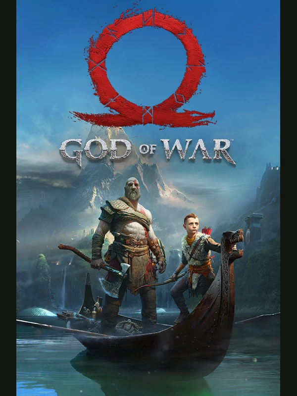
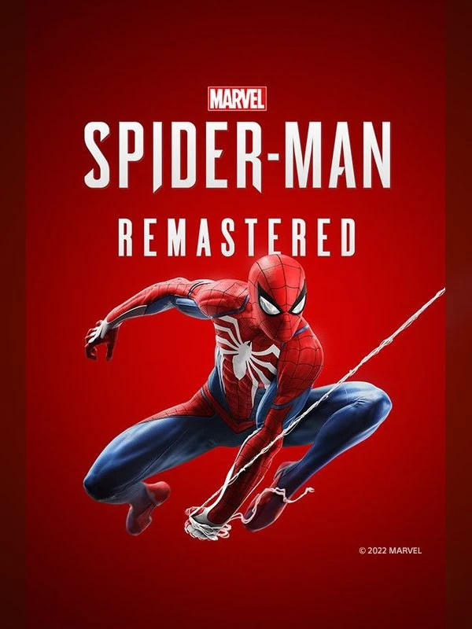
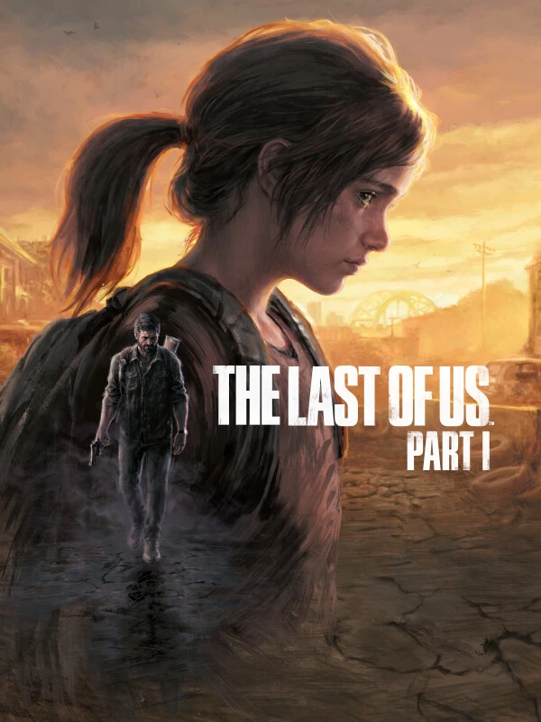

Remember what you play
Rate games, write reviews and keep a diary with the dates that matter to you.
Open your diary ↗BackLog is a personal project for remembering games, sharing reviews and discovering what to play next.
Rate games, write reviews and keep a diary with the dates that matter to you.
Open your diary ↗Organize your backlog, create themed or ranked lists and choose your favorite four.
Visit your profile ↗Explore the catalog, try Discover and compare games with other players.
Try Discover ↗Small ideas. A growing gaming universe.






Built one feature at a time.
2026 — and counting.
Keep the games you played and the ones you want to play in one collection.
Ratings, written reviews and a diary turn your play history into a story.
Choose your favorite four, build lists and give your profile its own identity.
Follow players, share reviews and discover what your community is playing.
Browse 100 games, explore their worlds and save a new discovery.
Game-inspired stars, thoughtful motion and familiar references make it BackLog.
A personal project by Gabriel, growing with every idea and every commit.
The project uses HTML, CSS and JavaScript, with a Python local server and optional online accounts through Supabase.